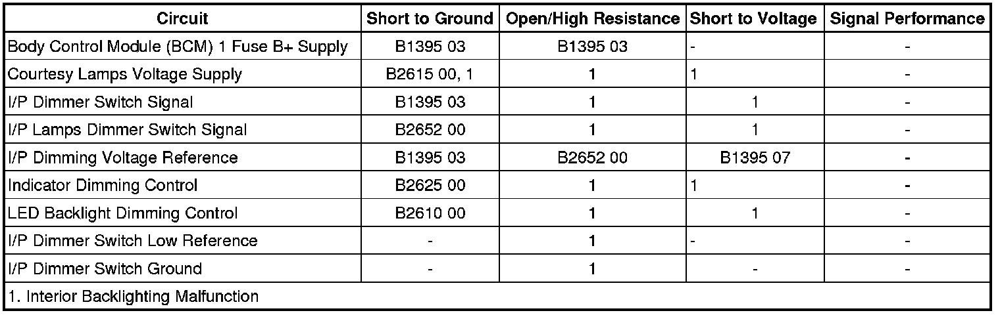

B2615
DTC B2615
Diagnostic Instructions
* Perform the Diagnostic System Check - Vehicle (Initial Inspection and Diagnostic Overview) prior to using this diagnostic procedure.
* Review Strategy Based Diagnosis (Initial Inspection and Diagnostic Overview) for an overview of the diagnostic approach.
* Diagnostic Procedure Instructions (Initial Inspection and Diagnostic Overview) provides an overview of each diagnostic category.
DTC Descriptor
DTC B2615 00
- Passenger Compartment Dimming 2 Circuit
Diagnostic Fault Information

Circuit/System Description
The BCM applies battery voltage to the courtesy lamps through the courtesy lamp supply voltage circuit. When any door is opened, the jam switch contacts close and the BCM receives a door-open input. If the BCM receives a door lock or unlock input or a rear hatch open input, the BCM will activate the courtesy lamp supply voltage circuit, providing battery voltage to all of the instrument panel (I/P) courtesy lamps, rearview mirror lamps, and rear compartment lamps. The BCM also provides a GMLAN serial data message to the driver door module (DDM) and front passenger door module (PDM) to apply battery voltage to the exterior courtesy lamps. In the event that any of these lamps were to remain illuminated for more than 20 minutes with the ignition switch in the OFF position, the BCM will deactivate the inadvertent power courtesy lamp control circuit to prevent a total battery discharge condition.
Conditions for Running the DTC
Battery voltage must be between 9-16 volts.
Conditions for Setting the DTC
DTC B2615 00 will set when the BCM detects a short to ground in the courtesy lamps voltage supply circuit.
Actions Taken When the DTC Sets
The BCM will not illuminate any courtesy lamps supplied by the courtesy lamps voltage supply circuit.
Conditions for Clearing the DTC
* The condition responsible for setting the DTC no longer exists.
* You issue a scan tool CLEAR DTCs command.
* A history DTC will clear once 100 consecutive malfunction-free ignition cycles have occurred.
Reference Information
Schematic Reference
Interior Lights Schematics (Interior Lights Schematics)
Connector End View Reference
Component Connector End Views (Connector Views)
Description and Operation
Interior Lighting Systems Description and Operation (Interior Lighting Systems Description and Operation)
Electrical Information Reference
* Circuit Testing (Component Tests and General Diagnostics)
* Connector Repairs (Component Tests and General Diagnostics)
* Testing for Intermittent Conditions and Poor Connections (Component Tests and General Diagnostics)
* Wiring Repairs (Component Tests and General Diagnostics)
Scan Tool Reference
Control Module References (Programming and Relearning)
Circuit/System Testing
1. With a scan tool clear the DTC.
2. Ignition OFF, disconnect the harness connectors at the following components:
* LH I/P courtesy lamp
* LH Vanity Mirror
* Liftgate courtesy lamp
* Middle overhead console courtesy lamps
* Overhead console courtesy lamps
* Rear dome lamp
* RH I/P courtesy lamp
* RH Vanity Mirror
3. Operate the vehicle within the conditions for running the DTC and verify the DTC does not reset.
• If the DTC resets, test the courtesy lamps voltage supply circuit for a short to voltage, short to ground, or an open/high resistance. If the circuits test normal, replace the BCM.
4. Reconnect each component one at a time and verify that the DTC does not reset as current.
• If the DTC resets as current, test or replace the component responsible for setting the DTC.
Repair Instructions
Perform the Diagnostic Repair Verification (Verification Tests) after completing the diagnostic procedure.
* Overhead Console Courtesy Lamp Replacement (Overhead Console Courtesy Lamp Replacement)
* Instrument Panel Courtesy Lamp Bulb Replacement - Left Side (Left Hand Drive) (Instrument Panel Courtesy Lamp Bulb Replacement - Left Side (Left Hand Drive))Instrument Panel Courtesy Lamp Bulb Replacement - Left Side (Right Hand Drive) (Instrument Panel Courtesy Lamp Bulb Replacement - Left Side (Right Hand Drive))
* Instrument Panel Courtesy Lamp Bulb Replacement - Right Side (Left Hand Drive) (Instrument Panel Courtesy Lamp Bulb Replacement - Right Side (Left Hand Drive))Instrument Panel Courtesy Lamp Bulb Replacement - Right Side (Right Hand Drive) (Instrument Panel Courtesy Lamp Bulb Replacement - Right Side (Right Hand Drive))
* Sunshade Replacement (Service and Repair)
* Rear Liftgate Lamp Replacement (Service and Repair)
* Control Module References (Programming and Relearning) for BCM replacement, setup, and programming